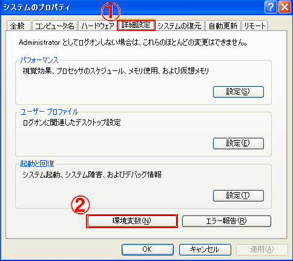
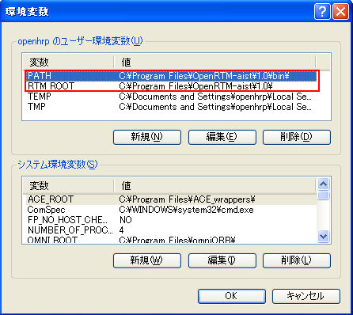

Linux日本語環境とGrxUIJavaかXの入力システムの不具合により、 Linuxの日本語環境でGrxUIを使用するとユーザーインタフェースの挙動が 遅くなる場合があります。 このような場合、ロケールを英語に設定することにより挙動を改善できます。 Linuxで現在のロケールを調べるには次のようにします。$ set | grep LANG LANG=ja_JP.eucJP $ export LANG=C Windows環境でOpenRTM-aist-0.4.2とOpenRTM-aist-1.0.0を切り替えて使用する方法
Windows環境でOpenRTM-aist-0.4.2とOpenRTM-aist-1.0.0の両方をインストールしている場合
環境変数を切り換えて異なるバージョンのOpenRTMを使用することが可能です。 C:\Program Files\OpenRTM-aist\0.4\ C:\Program Files\OpenRTM-aist\1.0\のように切り換えます。 具体的な切り替え方法は、以下の通りです。


環境変数を変更したら、再び
「Visual C++ によるコンパイル」
からはじめて、リンク先にある通り改めてrtm_config.vspropsファイルをコピーしてから
OpenHRPのバイナリコードを生成してください。 |